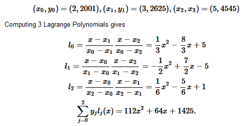
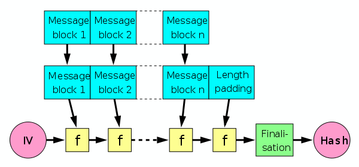
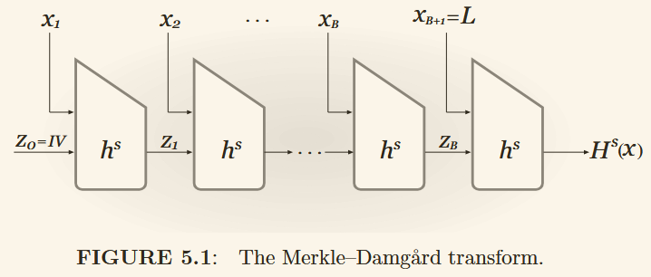

{kind=link}
 CBC
CBC 模式消除了 ECB 模式的局限性。每个明文在加密之前都与先前的密文进行异或，其中第一个明文块与随机初始化向量 (IV) 进行异或。CBC是实践中最常用的模式。
CTR
它在某种意义上就像流密码。 CTR 模式通过重复加密“计数器”的连续值来生成密钥流。
CBC
CBC 模式消除了 ECB 模式的局限性。每个明文在加密之前都与先前的密文进行异或，其中第一个明文块与随机初始化向量 (IV) 进行异或。CBC是实践中最常用的模式。
CTR
它在某种意义上就像流密码。 CTR 模式通过重复加密“计数器”的连续值来生成密钥流。
一些密码学算法的具体实现 Cryptographic Implementation Details
略
Optimal Asymmetric Encryption Padding 它是与非对称加密（通常是 RSA）一起使用的填充方案。它可以给确定性加密方案带来一些随机性。当与 RSA 一起使用时，组合方案被证明是 IND-CCA 安全的。
令
Encryption: 计算 $k$ 比特密文的过程如下： $$ E(m) = f_{pk}({(m||0^t) \oplus G(R)} || {R \oplus H((m||0^t)\oplus G(R)) }) $$
Decryption: 通过陷门解密： $$ D(c) = f_{sk}(c) = {(m||0^t) \oplus G(R)} || {R \oplus H((m||0^t)\oplus G(R)) } $$
然后
在实际应用中，我们分别用 RSA 加密和解密函数来代替 $f_{pk}$ 和 $f_{sk}$。
Elliptic Curve Integrated Encryption Scheme
是 ElGamal 加密方案在椭圆曲线上的一种变体
定义在素数域 $F_q$，选择一个点 $P$ 并拥有素数阶 $n$ 略（看NO.12）
ECIES 经常与一个对称加密方案和一个 MAC 方案一起使用。
Key Generation：
Encryption:
Decryption:
正确性：$Z'=dR=d(kP)=k(dP)=kQ=Z$
也叫 Digital Signature Standard (DSS)
安全性基于计算离散对数的困难性。此外，没有在标准模型下的已知证明。
了解即可
公钥是 $y$，私钥是 $x$。
对消息 $m$ 的签名是 $(r,s)$。
$$ v=g^{u_1}\cdot y^{u_2}=g^{H(m)\cdot s^{-1}}\cdot g^{x\cdot r\cdot s^{-1}}=g^{H(m)\cdot s^{-1}+x\cdot r\cdot s^{-1}}=g^{(H(m)+x\cdot r)\cdot s^{-1}}=g^k=r $$
Schnorr 签名是一种重要的基于 DLP 的签名方案。它适用于任何素数阶群，并且其安全性在 DL 假设下的随机预言模型中得到了证明。
公钥是 $y$，私钥是 $x$
对消息 $m$ 的签名是 $(r,s)$
$$ v=g^s\cdot y^{-r}=g^{k+x\cdot r}\cdot g^{-r\cdot x}=g^k\cdot g^{x\cdot r}\cdot g^{-r\cdot x}=a $$
RSA-FDH (full domain hash)是一种基于 RSA 的签名方案，遵循 hash-then-sign paradigm。它利用哈希函数（哈希函数的输出范围等于 RSA 模数）为普通 RSA 签名方案生成看起来随机的输出。因此，它可以防止对普通 RSA 签名方案的代数攻击，并且能够对任意长度的消息进行签名。但在实践中很难创建这样的哈希函数。 RSA-FDH 可以在随机预言模型中证明是 EU-CMA 安全的。
公钥是 $(N,e)$，私钥是 $(d,p,q)$
对消息 $m$ 的签名是 $s$
$$ s^e\ mod\ N=H(m)^{d\cdot e}\ mod\ N=H(m)^1\ mod\ N=H(m) $$
DES 与 AES 都属于迭代分组密码（iterated block ciphers），特点：
$$ L_{i+1}=R_i\ R_{i+1}=L_i\oplus F(R_i,K_i) $$
密码学必学内容，具体自己看对应链接，这里只简单过一下
分组密码可以解决一个块的加密问题，而操作模式（Modes of operation）可以解决多个块的加密问题。
ECB
明文被分为 $m$ 个块，每个块使用相同的密钥单独加密，但重复的明文块会产生相同的密文块.
CBC
CBC 模式消除了 ECB 模式的局限性。每个明文在加密之前都与先前的密文进行异或，其中第一个明文块与随机初始化向量 (IV) 进行异或。CBC是实践中最常用的模式。
CTR
它在某种意义上就像流密码。 CTR 模式通过重复加密“计数器”的连续值来生成密钥流。
p.s.：一些操作模式除了保证明文的机密性之外，还保证其真实性。有关更多信息，请参阅 AEAD 模式。
如果我们有一个秘密 $S$ 和 $n$ 个参与方，我们可以将 $S$ 分成 $n$ 个部分并将其分发给各个参与方。秘密可以以这样的方式划分：可以设置阈值 $k$，使得当秘密 $S$ 的 $k$ 部分已知时，可以计算整个秘密。如果 $S$ 的 $k−1$ 或更少部分已知，则无法计算 $S$。该方案称为 $(k,n)$ threshold scheme。
以一个例子说明： $S=1425,\ n=5,\ k=3$
首先确定多项式的阶数（order），即 $k−1$，然后随机选取系数，即随机选取$a_1,a_2$，例如： $$ f(x)=S+a_1x+a_2x^2=1425+64x+112x^2 $$
然后可以计算 $n$ 个点： $$ f(1)=1425+64+112=1601\ f(2)=1425+128+448=2001\ f(3)=1425+192+1008=2625\ f(4)=1425+256+1792=3473\ f(5)=1425+320+2816=4545 $$ 然后将这些点分发给 $n$ 个参与方。
解密的话，只需要 $k$ 个点即可，然后使用拉格朗日插值法或者列线性方程组即可得到多项式，最后得到 $S$。 
听不懂这儿的基本可以告别密码学了
英文教材里基本有，这里简单说一下。
Merkle-Damgaard (MD) 哈希函数是通过扩展抗碰撞压缩函数的域而构建的哈希函数。即，将一个小的压缩函数扩展成一个安全变长的哈希函数
安全哈希函数 $h$ 的特点：
$$ h:{0,1}^n\times {0,1}^r \rightarrow{0,1}^n $$ 顾名思义就是把 $n+r$ 位的输入压缩成 $n$ 位的输出，当然也是 Collision Resistance 的。可以理解为固定输入长度的哈希函数。
将 “固定输入长度” 变为 “变长输入长度”，维基百科截下来的图：  教材上截下来的图： 
输入 $M$ 被分成 $n$ 个块 $M_1,M_2,...,M_m$，然后通过迭代的方式计算哈希值： $$ S_0=IV\qquad i=0,\cdots m-1\ S_{i+1}=f(S_{i},M_i)\ h(M)=S_m $$
MD 结构最重要的是，如果压缩函数是抗碰撞的，那么整体结构也是抗碰撞的
P.S. : 注意到上图有个 “finalisation” 阶段，这个阶段是为了防止长度扩展攻击（length extension attack）
如果 $N$ 是一个块，且已知 $h(M)=x$ ，那么可以通过 $h(M||N)=f(x,N)$ 轻易计算 $M||N$ 的哈希值
{kind=link}
{kind=link}